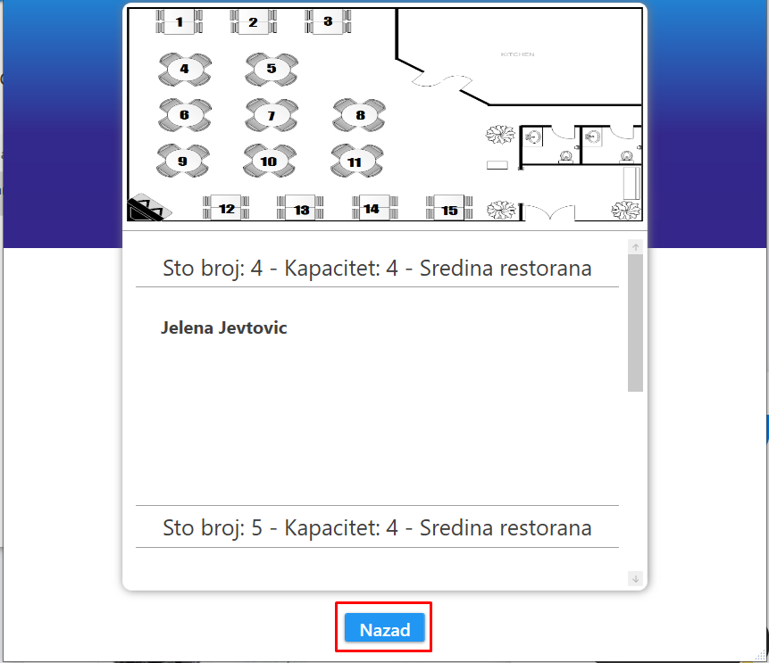
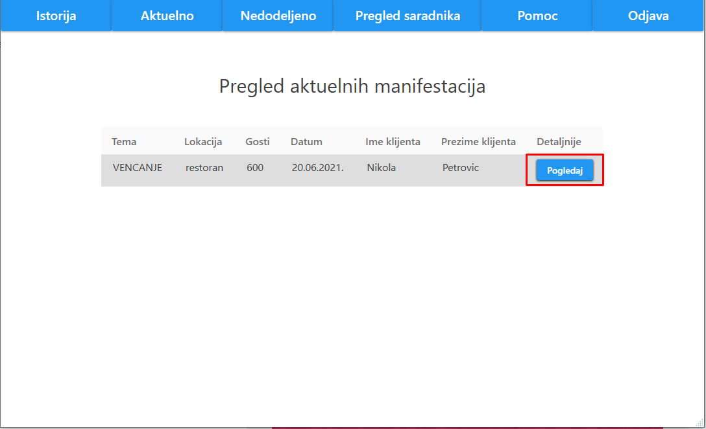
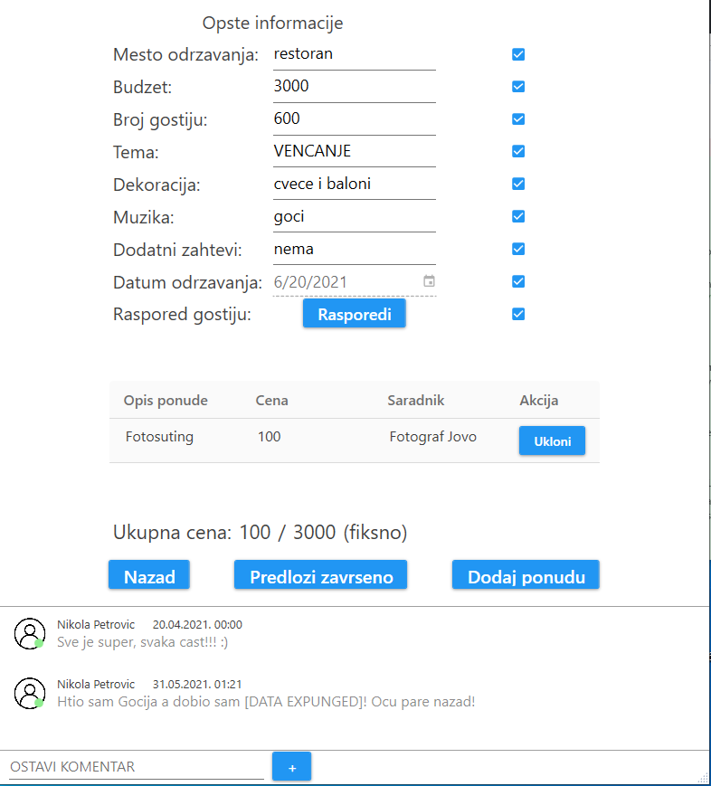
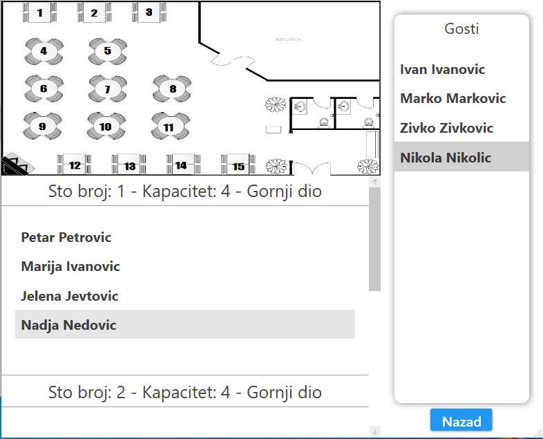
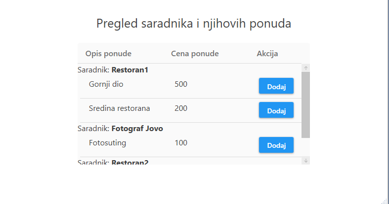
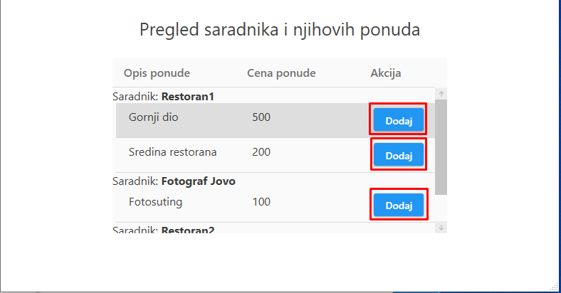
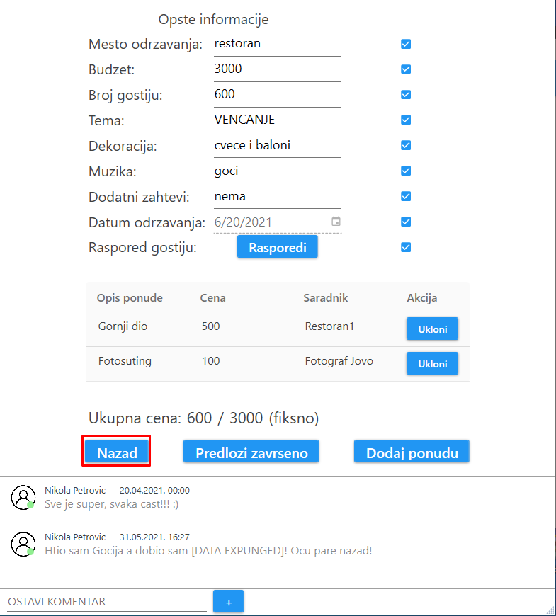

Nakon prijave organizatora ili klika na dugme "Istorija", korisniku se prikazuje istorija manifestacija
Organizator moze dodatno da filtrira po datumu odrzavanja manifestacije, kao i po temi
Prikaz manifestacije je odradjen tabelarno, gde je za svaku manifestaciju ispisana tema manifestacije, lokacija, broj gostiju, datum, ime i prezime klijenta, kao i dugme "Pogledaj"
Ukoliko organizator zeli detaljniji prikaz specificne manifestacije, njemu je to omoguceno klikom na dugme "Pogledaj"
Ovaj prikaz sadrzi sve opste informacije za datu manifestaciju, sto podrazumeva mesto odrzavanja, budzet, broj gostiju, temu, dekoraciju, muziku, dodatne zahteve, datum odrzavanja, raspored gostiju i sve ukljucene ponude.
Pritiskom na dugme "Pogledaj" pored labele "Raspored gostiju", organizatoru ce se pojaviti prozor sa detaljnim rasporedom gostiju.
Ovaj prozor sadrzi sliku sematskog plana restorana, gde su svi stolovi numerisani
Ispod ove slike nalazi se detaljan opis svakog stola. Ovaj opis sadrzi broj stola, kapacitet i gde se taj sto nalazi u restoranu. Pored toga napisana su i imena gostiju koji su bili smesteni za tim stolom

Klikom na dugme "Nazad", organizatoru se zatvara prozor.
Nakon klika na dugme "Aktuelno", korisniku se prikazuje pregled aktuelnih manifestacija
Prikaz manifestacije je odradjen tabelarno, gde je za svaku manifestaciju ispisana tema manifestacije, lokacija, broj gostiju, datum, ime i prezime klijenta, kao i dugme "Pogledaj"

Ukoliko organizator zeli detaljniji prikaz specificne manifestacije, njemu je to omoguceno klikom na dugme "Pogledaj"
Ovaj prikaz sadrzi sve opste informacije za datu aktuelnu manifestaciju, sto podrazumeva mesto odrzavanja, budzet, broj gostiju, temu, dekoraciju, muziku, dodatne zahteve, datum odrzavanja, raspored gostiju i sve ukljucene ponude.
Pored opste informacije, nalazi se i ukupna cena manifestacije, dugmad "Nazad", "Predlozi zavrseno" i "Dodaj ponudu", lista komentara i polje za organizatora da ostavi svoj komentar.
Pritiskom na dugme "Rasporedi" pored labele "Raspored gostiju", organizatoru ce se pojaviti prozor sa detaljnim prikazom mesta odrzavanja manifestacije u kojem je omoguceno organizatoru da rasporedi goste.

Ovaj prozor sadrzi sliku sematskog plana restorana, gde su svi stolovi numerisani
Sa desne strane prozora nalazi se spisak gostiju kojima jos uvek nije dodeljen sto
Ispod slike sematskog plana nalazi se detaljan opis svakog stola. Ovaj opis sadrzi broj stola, kapacitet i gde se taj sto nalazi u restoranu. Pored toga napisana su i imena gostiju koja su smestena za tim stolom
Organizator moze da prevuce nekog od nedodeljenih gostiju za zeljeni sto, ukoliko kapacitet mesta nije popunjen.
Klikom na dugme "Nazad", organizatoru se zatvara prozor.
Pored svake stavke opste informacije manifestacije nalazi se polje za potvrdu
Ukoliko organizator otkaci polje, to znaci da je data stavka zavrsena

Klikom na dugme "Predlozi zavrseno", organizator moze da predlozi zavrsenu manifestaciju, koja se dalje salje korisniku na uvid
Da bi se organizatoru omogucilo slanje manifestacije korisniku, neophodno je da sve opste informacije manifestacije budu zavrsene

Klikom na dugme "Dodaj ponudu", organizator se otvara prozor sa prikazom saradnika i njihovih ponuda koje moze dodati za manifestaciju

Ovaj prozor sadrzi tabelarni prikaz ponuda za svakog saradnika
Klikom na dugme "Dodaj" koja se nalazi u svakoj ponudi, organizator moze da doda ponudu u manifestaciju
Administrator moze da ukloni ponudu klikom na dugme "Ukloni" za odgovarajucu ponudu u pregledu aktuelne manifestacije

Na samom dnu prozora nalazi se polje za ostavljanje komentara.
Organizator moze da napise i komentar i da ga postavi pritiskom na dugme "+"

Klikom na dugme "Nazad", organizatoru se zatvara prozor.
Nakon klika na dugme "Nedodeljeno", korisniku se prikazuju sve nedodeljene manifestacije
Prikaz nedodeljenih manifestacije je odradjen tabelarno, gde je za svaku manifestaciju ispisana tema manifestacije, lokacija, broj gostiju, datum, ime i prezime klijenta, kao i dugme "Preuzmi"

Klikom na dugme "Preuzmi", organizator moze da preuzme datu manifestaciju.

Nakon klika na dugme "Pregled saradnika", korisniku se prikazuju svi njegovi saradnici
Prikaz saradnika je odradjen tabelarno, gde je za svakog saradnika ispisan naziv, adresa, tip saradnika, specijalizacija, kao i dugmad "Obrisi" i "Izmeni"
Klikom na dugme "Obrisi", organizator moze da obrise datog saradnika.
Klikom na dugme "Izmeni", organizator moze da azurira datog saradnika.
U donjem desnom cosku, organizatoru je omoguceno dodavanje novog saradnika, klikom na dugme "Dodaj"